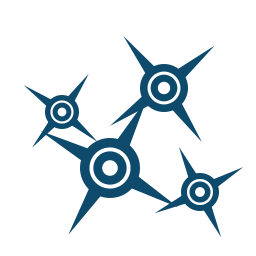

Freeware · Windows · Sparx Enterprise ArchitectAI assistant for Sparx Enterprise Architect — talk to your model
Ask questions in plain language, have diagrams drawn and reworked, and turn the model into documents. Every change is written by Enterprise Architect itself — and only after you approve it.

- Order process (BPMN)
- Requirements from a PDF
- Impact: payment service
- Claude is analyzing and planning (step 1)4 s
- Reading the model database: package Sales0 s
- Saving to EA, 14 operations: diagram Order process6 s
Done. The Sales package has a new BPMN diagram Order process: 3 tasks, a gateway and the embedded subprocess Payment with 3 steps. I have opened it in your EA window.
What it does
One conversation instead of dozens of dialogs — from a quick question to a complete, consistently styled diagram.
Ask your model
Questions in natural language: what is in a package, which elements realise a requirement, what has changed. The assistant queries the model — a PostgreSQL repository or a .qea/.qeax file — read-only, and names objects by name, package and GUID. Each conversation can work with its own model.
Create and change
Packages, elements, diagrams and connectors; class attributes and operations with parameters; keywords, colours, position and size. Move, rename, delete — or copy a whole package with its contents.
BPMN the way EA expects it
Proper BPMN 2.0 types with stereotypes and tags: tasks, events, gateways, flows, collapsed and embedded subprocesses. Drawn from a BPMN file, a photo, a sketch or just a description.
Diagrams that read well
Legends with automatic colouring, line styles and connector routing along a path you give, connectors hidden on one diagram only, navigation cells that link to other diagrams.
Written by EA itself
Changes go through EA’s own automation interface (COM) — when the model uses security, under an EA user account, so its permissions and locks apply. Before a bigger restructuring the assistant is instructed to take a baseline first.
You approve every change
Three approval modes: ask, plan and auto. Every save, failed ones included, lands in the Audit log with time, account and result — and exports to Excel.
Impact analysis
Follow relationships from an element up to six levels deep, with paths and the diagrams affected. See where a service operation is used on sequence and activity diagrams — and which operations are used nowhere.
Works with your open EA
Knows which diagram is open and what is selected, opens diagrams, highlights elements in the Project Browser and refreshes whatever it changed — no F5 needed.
Word, Excel and images
Word documents with diagrams from EA, Excel workbooks (element lists, matrices, impact results) and PNG images such as a use case–requirement matrix.
Confluence pages
Pages built from the model and the conversation: code for the Source Editor, or published through the REST API after your approval, with diagrams as attachments. Driven by document templates you can edit.
Assistant memory
Remembers what you agree on — modelling conventions, preferences, corrections — as local Markdown files, and applies it in every new conversation, whichever model it works with. A note is limited to one model only when you ask for it.
Four languages
English, Polish, German and French: the application, the assistant’s answers, the document templates and the user guide.
How it works
You stay in charge at every step.
You ask
Type a question or a task; attach a PDF, a screenshot, a sketch or a BPMN file.
Claude plans
The Claude model decides what to look up and what to change. You follow every step live in the chat.
It reads and writes the model
Reads straight from the PostgreSQL repository or the .qea/.qeax file (read-only); writes only through Enterprise Architect via COM.
You approve
See the planned changes, then approve or reject. Saved changes are logged and show up in your EA window.
A look inside
The interface with example content from a fictional online shop.
Security and privacy
Your model stays where it is. The assistant works on your computer, with your accounts.
Runs locally
A desktop application for Windows, installed for your user account. Settings, conversation history, memory and the Audit log are stored in your user profile.
Secrets stay in Windows
The Claude API key, the EA account password, the database password and the Confluence token are kept in Windows Credential Manager — never in plain text in the settings file.
Encrypted connections
The Claude API and Confluence are used only over HTTPS. The connection to PostgreSQL can be encrypted with TLS — preferred, required, or required with the server certificate checked against the Windows certificate store. A model file (.qea, .qeax) needs no database connection: the assistant reads it directly, read-only.
Writes only through EA
The database session is read-only, and a model file is opened read-only. Every change is made by Enterprise Architect — when the model uses security, under the EA account you set up, with that account’s permissions and locks. Content of attachments, documents and the model is treated as data, not as instructions.
What is sent to Anthropic
To answer, Claude receives the conversation, your attachments, remembered notes, templates in use, the results of the assistant’s queries and the diagram images it shows — not the whole model. Check your organisation’s rules before using it on company models.
Your own API key
The app uses your Claude API key from the Anthropic Console. The app itself is free; Anthropic bills Claude usage to the account the key belongs to.
Requirements
Required
- Windows 10 or 11 (64-bit)
- Sparx Enterprise Architect with a licence — to save changes, the assistant starts EA in the background (it uses a licence seat while it runs) or, for a model file you have open, uses your EA window
- An EA model: a .qea or .qeax project file, or a PostgreSQL database with security enabled (“Require User Lock to Edit”)
- For a database model: access to the database (server, port, name, account) and an EA user account for the assistant with edit rights; a model file needs only its path (and the account only if security is enabled)
- A Claude API key from the Anthropic Console and an internet connection
Optional
- Confluence (Data Center or Cloud) — to publish pages directly
- A default mail program in Windows — for bug reports and release news
Older file formats (.eap, .eapx, .feap) and other databases are not supported; EA converts an .eap/.eapx file to .qea with a project transfer (Settings → Model → Transfer → Full Project Transfer).
FAQ
Straight answers about cost, requirements, safety and privacy.
Is it really free? Can I use it at work?
Yes. Loonar Compass is freeware: free of charge for any purpose, including professional and commercial use, on any number of computers. You may also pass it on to others — free of charge, complete and unchanged, together with the licence file.
The source code is public on GitHub, so you can see exactly what the application does with your model. It is source-available, not open source: modifying the application, creating derivative works, selling it or renting it out is not allowed. Read the licence.
What does it cost to run, and which Claude model does it use?
The application is free. The assistant works with your own Claude API key from the Anthropic Console, and Anthropic bills its use to the account the key belongs to — pay as you go, by the amount of text the model reads and writes. Current prices are on Anthropic’s pricing page.
The model is always Claude Haiku 5.5 (claude-haiku-5-5); it is not a setting. “Max tokens” (10,000 by default) only caps the length of a single answer: you pay for the text actually generated.
Which operating systems does it run on?
Windows 10 and Windows 11, 64-bit. It is a native Windows desktop application and works together with Enterprise Architect installed on the same computer.
Which Enterprise Architect setups are supported?
- Enterprise Architect installed on the same computer, with a valid licence. To save changes, the assistant starts it in the background, where it takes one licence seat; it closes again after 10 minutes without work and when you close the application. If the model file is open in your EA window, the changes go through that window instead — a second EA never opens the same file.
- The model as an EA project file .qea or .qeax — in Settings, “2. Model” → “EA file (.qea, .qeax)” and its path in “Model file”, with no database server, account or password — or in a PostgreSQL database that your computer can reach (server, port, database name, account). A .qea file is meant for one person, .qeax for a small team sharing the file (Sparx recommends it for fewer than 5 users). Older file formats (.eap, .eapx, .feap) and repositories in other databases are not supported; Enterprise Architect converts an .eap/.eapx file to .qea with a project transfer (Settings → Model → Transfer → Full Project Transfer).
- For a model in a database: user security enabled (Settings → Security → Enable Security), in “Require User Lock to Edit” mode. In a model file, security is optional; without it, the assistant needs no EA account.
- With security enabled: an EA user account for the assistant, with a password and edit rights — ideally a separate one, so that its changes and locks are easy to tell from yours.
- Several models: every conversation has its own model, shown in its header (“Model: …”). A new conversation uses the default from Settings; “Choose another model…” — or a click on the header, which opens “Model of this conversation” — lets you pick another PostgreSQL database (server, port, database, account, password, encryption) or EA file (.qea, .qeax), with its EA account, and test the connection. Dropping a .qea/.qeax file on the window makes it the model of the conversation. Conversations from earlier versions get a copy of the model from Settings. Enterprise Architect in the background keeps one model open at a time, so switching it to another model takes from a few seconds to about 25 seconds.
The application does not check for a particular EA version or edition. What matters is that your Enterprise Architect can open this model: the file, or the database repository with security enabled.
Do I need administrator rights to install it?
No. By default (“Just for me”) the installer installs Loonar Compass for your user account only, in %LOCALAPPDATA%\Programs\Loonar Compass, and needs no administrator rights. If you choose “For all users of this computer” instead (in C:\Program Files\Loonar Compass), the installer asks for administrator rights.
The application itself always runs as a normal user, and every user has their own settings and conversations. If someone else approves an installation for all users with an administrator account, enter your configuration later in the application (Settings), not in the installer — otherwise it ends up in the administrator’s profile.
Why may Windows SmartScreen warn me about the installer?
Because the installer of version 0.7 is not digitally signed yet (with a code signing certificate), so Windows does not know its publisher. Microsoft Defender SmartScreen may therefore show “Windows protected your PC” when you start it, and your browser may warn that the file is not commonly downloaded. The default installation for your user account needs no administrator rights, so no administrator prompt appears; only an installation for all users asks for them — and shows the publisher as unknown. A signed installer is planned and should follow soon. Until then:
- Download the installer only from loonar.eu or from the project’s releases on GitHub, over HTTPS.
- Compare its checksum with the SHA-256 shown next to the download button — in PowerShell:
Get-FileHash .\LoonarCompass-Setup-0.7.4.exe. - In the SmartScreen window, click “More info” and then “Run anyway”.
On Windows 11 with Smart App Control turned on, unsigned applications are blocked and cannot be started this way; in that case, please wait for the signed version.
Can the assistant damage my model?
It saves only what you allow, and only in the way Enterprise Architect allows:
- Approval modes: ask — you approve every save; plan — one approval per answer; auto — no questions, for test models. Publishing to Confluence always needs your approval, and the request says explicitly when an existing page will be replaced.
- Writes only through EA: the database is read in a read-only session, a model file read-only; every change is made by Enterprise Architect — with security enabled, under the assistant’s EA account, with that account’s permissions and locks. Objects locked by other users are left alone.
- Instructions only from you: the assistant is instructed to treat the content of attachments, documents and the model as data, not as instructions to follow.
- Audit log: every save, failed ones included, is recorded with time, account and result, and can be exported to Excel.
- Baselines: before deleting or substantially restructuring an existing package, the assistant is instructed to save a baseline of it first; you restore it in EA (Manage Baselines → Compare/Restore).
Still, deleting is permanent and AI can make mistakes — the application reminds you of this, so review the proposed changes before you approve them. For important models use ask mode and keep backups of the database or the model file — the application comes without warranty.
What data leaves my computer, and where does it go?
To answer, the assistant sends only what it needs to Anthropic’s Claude API (api.anthropic.com): your messages and attachments, remembered notes, the templates in use, and what it has read from the model in that conversation — the results of its queries to the model (names and descriptions of packages, elements, diagrams) and images of the diagrams it showed. Not the whole model. After a language change, memory and templates are also sent for translation.
Beyond that, data goes only where you send it: published pages to your Confluence; bug reports and newsletter sign-ups are e-mails you check and send yourself from your mail program. The application sends nothing to Loonar on its own. Before using it on company models, check your organisation’s rules and the data terms of your Anthropic account.
Where are my settings, conversations and passwords stored?
On your computer, in your Windows user profile — every user of the computer has their own:
%APPDATA%\Loonar Compass: settings (app.properties), conversation history, attachments, assistant memory, document templates and the audit log.- Windows Credential Manager: the Claude API key, the EA account password, the database password and the Confluence token, as well as the passwords of a conversation’s model that differs from Settings. None of them is kept in plain text in the settings file.
The program itself is installed in %LOCALAPPDATA%\Programs\Loonar Compass by default, or in C:\Program Files\Loonar Compass when installed for all users.
Is the communication encrypted?
Yes, wherever the application connects by itself:
- Claude API and Confluence: only over HTTPS. A Confluence address starting with
http://is accepted only for a server on the same computer (localhost). - Model database (PostgreSQL): TLS, set with “Connection encryption” on the “2. Model” card in Settings (option “PostgreSQL database”): “Preferred” (default) — TLS whenever the server offers it, otherwise an unencrypted connection; “Required” — TLS or no connection; “Required, certificate verified” — TLS, and the server’s certificate and name are checked against the Windows certificate store, including your company’s certificates. “Preferred” and “Required” do not check the certificate. After “Save and test connection”, the application tells you whether the connection is encrypted. In app.properties the setting is
db.sslmode=prefer,requireorverify-full. - Model file (.qea, .qeax): no database connection — the assistant reads the file directly, read-only.
Tip for database administrators: with hostssl entries in pg_hba.conf, the server accepts only TLS connections from all clients. Enterprise Architect’s own connection to the database follows EA’s settings, not the application’s.
Does it work behind a corporate proxy or firewall?
Allow these connections: HTTPS (port 443) to api.anthropic.com, for a database model your PostgreSQL server (port 5432 by default; a direct connection, not through the proxy) and, if you publish pages, your Confluence.
For HTTPS, the application uses the proxy set in the Windows Internet settings (system proxy). You can also set the HTTPS_PROXY or ALL_PROXY environment variable, e.g. http://proxy.example.com:8080 (exceptions in NO_PROXY); it takes precedence over the system proxy. Restart the application after a change. For basic authentication, the user name and password can be part of the address in that variable; automatic detection and configuration scripts (WPAD, PAC) and proxy sign-in with your Windows account (NTLM, Kerberos) are not supported.
HTTPS certificates are also checked against the Windows certificate store, so a company root certificate used for traffic inspection is accepted once it is installed in Windows.
Which languages are available?
English, Polish, German and French: the application and installer windows, the assistant’s answers, the default document templates, the user guide, the licence and the changelog. The installer starts with a language choice (English by default); later you change it in Settings, on the “4. Language and change approval” card.
The assistant answers in the application’s language unless you write to it in another one. Conversation history is never translated.
Does it work with Confluence Cloud and Data Center?
Yes, with both — and Confluence is optional. Without it, the assistant still prepares pages: you paste the code into the source editor yourself (“Copy page code”, “Open images folder”).
To publish directly, fill in the “6. Confluence” card in Settings: for Data Center the address and a personal access token; for Cloud the address (https://your-company.atlassian.net/wiki), the account’s e-mail and an API token; plus the space key and, optionally, a parent page. The assistant then creates or updates pages through the REST API, with diagrams as attachments — always after your approval (the request says explicitly when an existing page will be replaced; the previous version stays in the page history) and with the permissions of that token.
How do I update? Are my settings and conversations kept?
Close the application and run the installer of the newer version. It suggests the same folder, shows what has changed since your version and keeps your settings, conversation history, attachments, memory, templates and audit log; the key, passwords and tokens in Credential Manager stay as well. New versions are published here and on GitHub.
How do I uninstall it, and what stays on my computer?
Close the application and use “Uninstall Loonar Compass” in the Start menu or its entry in Windows Settings → Apps → Installed apps. This removes the program files, the shortcuts and the system entry. Your data stays unless you tick one of these options:
- “Remove settings, conversations, attachments, memory, templates and the audit log” — this deletes the whole
%APPDATA%\Loonar Compassfolder; - “Remove the API key, passwords and tokens from Credential Manager” — the Claude API key, the EA account and database passwords and the Confluence token.
Your EA model, files you saved elsewhere and pages published to Confluence are not affected.
How do I report a bug or hear about new versions?
In the application, open “Report a bug” in the navigation bar, describe what happened, add screenshots and click “Send report”: a ready e-mail to mariusz@loonar.eu opens in your default mail program, where you check it and send it. Technical information (application version, Windows version, AI model, approval mode, last message — no passwords or keys) is added only while that option is ticked (it is by default).
For release news, enter your e-mail on the “5. New releases (newsletter)” card in Settings and tick the consent. Or simply write to mariusz@loonar.eu.
Download
Free for everyone — download, install, connect your model.
Loonar Compass 0.7
Download installerSHA-256 checksum: d22b2b62f0bc318e49e2ae7d56083073b1c51da81ded6f1c321f9f3af4fad332
Installs for your user account — no administrator rights needed.
Freeware: free for any use, including commercial. Modifying the application is not allowed. Read the licence
The installer starts with a language choice: English (default), Polish, German or French.
To update, just run a newer installer — your settings and history are kept.
Support the project
Loonar Compass is free, also for commercial use, and it will stay free. If it saves you time, you can support its development with a voluntary contribution. It pays, among other things, for a code-signing certificate, so that Windows recognises the application as coming from a verified publisher.
Other ways to help: report bugs and ideas (“Report a bug” in the app), recommend the application to other Enterprise Architect users, or star the project on GitHub.
About me
Who is behind it
I’m a Principal Technical Product Manager from Stargard, Poland, with years of experience building digital products — product strategy and the full lifecycle, from market research, customer analysis and requirements to delivery — for cloud and telecommunication services, including integrating AWS, Azure and Google Cloud with on-premise systems. I graduated in computer science from the Szczecin University of Technology and train requirements engineering (IREB CPRE). I’m not a programmer: Loonar Compass was built with AI coding assistants — I decide what the application must do and how it should behave for architects, and the code was written by AI. That is its strength: it is made by someone who works with Enterprise Architect models every day and knows what architects need.
Why this application exists
AI is great at producing diagrams as code — PlantUML, Mermaid. But that is diagramming, not modelling: each such diagram is a momentary view, and the knowledge about the system is not kept anywhere. Simon Brown, the author of the C4 model, draws exactly this line between diagrams and models: a model is a single source of truth about elements and their relationships, from which many consistent views are derived — and that is what makes governance possible, such as impact analysis and consistency checks. Enterprise Architect keeps such a model. Loonar Compass lets you work with that model through a conversation with AI.
Why “Compass”
A compass gives you orientation. The logo is a constellation of nodes: like a navigator finding the way by the stars, the assistant helps you find your way in a large architecture model.
Contact
Questions, ideas or a bug? Write to mariusz@loonar.eu — or use “Report a bug” in the app.